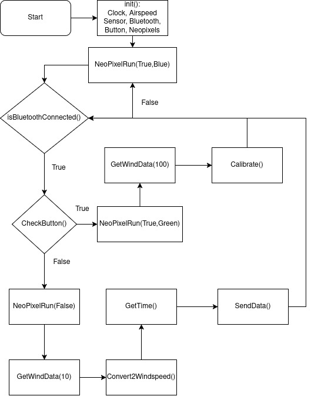
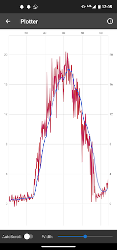
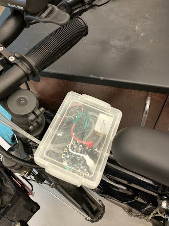
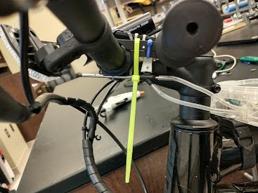

One example project that I will use to explain future diagrams is from a project I built a few years ago. The overall mission goal was to “use a pitot probe to measure the velocity of my bicycle while riding around town”. My initial hand sketch showed the pitot probe on the front of my bike which would use the pressure difference between the static and dynamic ports to calculate velocity (See Chapter 13). The project was successful and I was able to get some good data on my bike rides around town. The project also included a mechanical subsystem which was a simple plastic case for the electronics and zip ties to mount the pitot probe as well as a data acquisition system using the CPB and a Bluetooth module to send the data to my phone in real time. The figure below showed my initial sketch for the project.
After the sketch it’s important to be sure that all requirements set by the instructor are satisfied. In this case I needed 3 components so I decided to use the bluetooth transmitter, pitot probe, neopixels and button on the CPB which ended up being 4 components but I thought it would be nice to have visual feedback so I added the neopixels. The pitot probe would be the external component and the button would be used to calibrate the pitot probe. Finally, the bluetooth would be used to send the data to my phone. Although the course has a set of general requirements defined in Section 3.2, I still needed to add a few specific requirements as shown below.
The system shall measure the windspeed of the vehicle.
Note however that I failed to satisfy the requirement of System must have one of the three components as an external part to the main microcontroller and not be something already taught in a weekly project. This is because the pitot probe project is a weekly project (See Chapter 13). However, I still think this is a good example of how to use the systems engineering life cycle to design an electrial subsystem so I will continue with this example.
Upon completion of the initial sketch and the requirements it is now time to move away from a mission goal with requirements and begin the conceptual design process. This requires using the requirements to figure out what components and modules are necessary to accomplish the system you are trying to build. In order to do this, many diagrams are going to be created namely Block Definition Diagrams (BDDs) and Internal Block Diagrams (IBDs). I am going to be using DrawIO to create these diagrams[4].
Block Definition Diagrams (BDD) are used to show the different components and modules of a system and how they are related to each other. For the pitot probe project, the electrical BDD is the easiest and most intuitive to complete first and is shown below.
The BDD shows the different components of the system which includes general names for all subsystems included. Notice that instead of writing pitot probe specifically I wrote “Windspeed Sensor”. This was I can elect to change to something different later on in the design process if I decide to do a last minute design change. Once you have the BDD completed it is time to move on to the Internal Block Diagram (IBD) which shows how the different components are connected to each other. The IBD for the electrical subsystem is shown below.
The IBD shows how the different components are connected to each other. In this case, the Windspeed Sensor is connected to the CPU, the Notification UI(most likely neopixels) is connected to the CPU as well as the Calibration UI (most likely a button) and the CPU will send data to the Wireless Communications module (most likely bluetooth). The IBD also shows the flow of data between the different components and using annotations via text boxes also shows what information is passed from one block to the next. Notice also that every block shown in the BDD is in the IBD except for the central block which is merely the name of the system. Finally, I want to draw attention to the fact that I do not have a data storage module because all data will be sent to my smart phone and logged there which satisfies one of my major requirements. The IBD is an important step in the design process as it helps to ensure that all components are properly connected and that the flow of data is correct. It also helps to identify any potential issues with the design before moving on to the detailed design phase.
Once you have completed the electrical BDD and IBD the software IBD is almost identical. The only difference is you need to first identify which components require software. For example, the power supply does not require any software but the wireless communication module does. The software BDD is shown below.
Notice that every software name contains () to indicate that it will eventually be a function. This is useful at this stage to help later on in the preliminary design phase. The CPU requires much software to run the system but since we’re programming everything in a very high level programming language like Python, CircuitPython or Arduino we’re assuming that the only software required by the user is just a main loop. In Python/CircuitPython the main loop is typically just a while True: loop and in Arduino it is the loop() function. Once the BDD is completed, the blocks in the BDD can be used to create the IBD which is shown below.
Again, The flow of data is similar to the electrical IBD but now we can see what information is being passed from one function to the next which again will be helpful when we get to the preliminary design phase.
The mechanical subsystem is a bit more difficult to create BDDs and IBDs for mostly because of how trivial and simple the systems are. Typically these diagrams are so simple that students often get confused and over complicate these diagrams. However, if you look at the diagrams below it’s easy to see that mechanical system is important but much smaller and less complex than the electrical and software subsystems. The BDD for the mechanical subsystem is shown below.
In this case my plan was to attach the windspeed sensor to my handelbars somehow and then put all the other electrical components into a main houseing. Then all I would have to do is figure out how to run the wires from the main housing to the windspeed sensor. So the BDD only has 3 components. With the BDD completed, I moved on to the mechanical IBD which is shown below.
In this case I elected to add the bicycle to the IBD because even though the bicycle is an interface I still wanted to show how the system would be attached to the bicycle and how the different components would be connected to it. The IBD shows that the main housing is attached to the bicycle via velcro strap and the windspeed sensor is attached to the bicycle via zip ties.
Following the conceptual design phase where missions goals, requirements, hand sketches, BDDs and IBDs are created, it is time to work out component selection. For example, instead of calling the module “Windspeed Sensor” it is time to select the component and call it a pitot probe. Similarly, buttons, neopixels and bluetooth must be selected. In the preliminary design phase the mechanical lead must create a simple layout of the system. This requires a simple top down layout of the system with dimensions to give the designer an idea of how that’s going to go together. For this, a simple sketchup tool can be used like Inkscape[10]. Because my project was so simple I did not create a simple layout for this system. For the electrical lead, a connections diagram is necessary to show how the different components are connected to each other. This would be similar to the electrical IBD except this would be actual components with references to actual parts. For this project the connections diagram is super simple because the CPU, clock, bluetooth module, buttons, and the neopixels are all built into the CPB so the only external component is the pitot probe which is connected to the CPB. So my connections diagram just has 3 components: the CPB, pitot probe and power supply.
For the software lead it is important to create psuedo code in the form of a software flow chart. These charts are something that is often overlooked but can be very helpful in the design process. The flowchart created for this pitot probe bike project is shown below.

Figure3.4.9.Psuedo Code Flow Chart for Bike Project
In this flow chart the code starts by initializing all the different modules, then turns on the neopixels. After that it checks if the bluetooth is connected. If it is not connected, then the neopixels turn blue and the system waits until a connection is made. Once a connection is made, the system checks if the button is pressed. If the button is pressed, then the system goes into calibration mode where it takes 100 samples of the voltage and averages them to get a bias voltage which is used to calibrate the system. During calibration, the neopixels turn green to indicate to the user that they should not touch the system. If the button is not pressed, then the system takes 10 samples of the voltage and averages them to get an average voltage which is then converted to windspeed using a conversion function. Finally, the data is sent to the user’s phone via bluetooth and also printed to serial for debugging purposes.
Once the conceptual and preliminary design phase is over it is time to create the detailed design. The detailed design needs to be so detailed that anyone following the design on paper to turn the system into a reality just by reading all of the schematics. Thus, for the mechanical lead, some sort of CAD (Computer Aided Design) tool is necessary for dimensioned drawings and detailed schematics. In this case I recommend using your favourite CAD program such as Blender, SolidWorks, Fusion 360 or anything you’re comfortable with [5][7][8]. For the electrical lead on the team, wiring diagrams are necessary and I recommend using either CirKit Designer or Fritzing[9][6]. CAD and wiring diagram examples will not be shown in this chapter simply because numerous examples of wiring diagrams are shown in virtually every weekly project and 3D CAD is the subject of an entire course in and of itself.
For the software lead it is time to figure out what software is required to run each component. For example, the pitot probe as explained in Chapter 13 is an analog sensor which means you need the analogio module. The neopixels need the neopixel. This process must be repeated for every component to be sure that you have all the modules necessary to run the program. Although this is a lot of work it helps tremendously later on in the subsystem testing phase. In this case the list below contains all the modules I need to run this system[30].
Notice that I didn’t need anything for the battery since that’s just hardware. An interesting corollary is that it’s actually possible to create a software flow chart that is so good that at the time of this writing if you upload the screenshot of the psuedo code flowchart to Gemini it will give you the actual code for it in any language you like[2]. In the youtube tutorial discussed in Section 3.5, I show how to do this but for the sake of this book I will show the code that was generated from the flow chart.
import math
import time
import board
import analogio
import digitalio
import adafruit_ble
from adafruit_ble.advertising.standard import SolitaryAdvertisement
from adafruit_led_animation.animation.solid import Solid
import neopixel
# --- Configuration & Initialization ---
rho = 1.225
v_bias = 0.0 # Initial calibration value
# Setup Analog Input (Change 'A1' to your sensor pin)
airspeed_sensor = analogio.AnalogIn(board.A1)
# Setup Button A
button = digitalio.DigitalInOut(board.BUTTON_A)
button.direction = digitalio.Direction.INPUT
button.pull = digitalio.Pull.DOWN # Adjust to Pull.UP if your button logic is inverted
# Setup NeoPixels
pixels = neopixel.NeoPixel(board.NEOPIXEL, 10, brightness=0.2)
RED = (255, 0, 0)
BLUE = (0, 0, 255)
GREEN = (0, 255, 0)
OFF = (0, 0, 0)
# Setup Bluetooth
ble = adafruit_ble.BLERadio()
advertisement = SolitaryAdvertisement()
def get_voltage():
# Helper to convert 16-bit ADC value to Voltage (0-3.3V)
return (airspeed_sensor.value * 3.3) / 65535
def get_wind_data(samples):
"""Measures analog value, converts to voltage, and averages."""
total_voltage = 0
for _ in range(samples):
total_voltage += get_voltage()
return total_voltage / samples
def convert_2_windspeed(avg_voltage):
"""Converts voltage to windspeed using dP = 1000 * dV."""
dv = avg_voltage - v_bias
dp = 1000 * dv
# Ensure dp is not negative before square root
if dp < 0: dp = 0
windspeed = math.sqrt((2 * dp) / rho)
return windspeed
def neo_pixel_run(state, color=OFF):
"""Sets the NeoPixel state and color."""
if state:
pixels.fill(color)
else:
pixels.fill(OFF)
pixels.show()
# --- Main Loop ---
print("System Initialized...")
while True:
# Bluetooth Connection Check
if not ble.connected:
neo_pixel_run(True, BLUE)
if not ble.advertising:
ble.start_advertising(advertisement)
# Flowchart shows loop back to start/check if disconnected
continue
# Check Button Routine
if button.value:
# Calibration Branch
neo_pixel_run(True, GREEN)
avg_v = get_wind_data(100)
v_bias = avg_v # Calibrate() routine
print(f"Calibrated! New V_Bias: {v_bias}")
else:
# Standard Measurement Branch
neo_pixel_run(False)
avg_v = get_wind_data(10)
speed = convert_2_windspeed(avg_v)
current_time = time.monotonic() # GetTime()
# SendData() routine (Printing to Serial/BLE)
data_string = f"Time: {current_time:.2f}s | Windspeed: {speed:.2f} m/s"
print(data_string)
# If you have a specific BLE UART service, you'd send data_string there.
You can see from the code generated that with the help of creating a psuedo code flowchart and the power of AI you can create code from scratch that actually flows the way you want it to. Note that the code above was not tested and may not actually work the way you intended. However, just by glancing at it, it is a great start and shows the power of creating this detailed flow chart. Just to be thorough, the code I ended up using is on Github and you can see how similar the code is between the autogenerated code and my code that I built from scratch before AI was widely adopted [33].
After the detailed design, the Critical Design Review (CDR) is conducted to evaluate the design against its requirements. This involves a live presentation to stakeholders and peers. In this presentation the students are required to explain their current design and respond to any quesitons from the audience. This is a good way to receive feedback about the project before moving into subsystem testing and final verification and validation. Of course, for my project I did not do a CDR and moved directly into subsystem testing.
For my first test, I elected to deal with the pitot probe and used Method 1 (Chapter 9) to record data with my laptop. Then I had my parents drive down the highway while I hung the pitot probe out the window. I was able to get a nice plot of windspeed. One issue I ran into was that when the car came to a stop the speed did not. I realized I needed to go ahead and add the button press so that I could calibrate often. Hence why having the button press was so crucial. Once I was sure the pitot probe worked and my button was able to calibrate I added the bluetooth module and repeated the same experiment only this time I plotted the data on my phone as shown below.

Figure3.4.10.Plot of Windspeed Data During Calibration Test
Once I knew the button, pitot probe and bluetooth were working I added the neopixels and tested that as well although I do not have a photo of that particular test.
Subsection3.4.9Test Readiness Review (TRR) and Systems Verification Review (SVR)
Once I tested all the components it was time to integrate everything together by placing everything into a small case on my bike. I then took the system on a bike ride around town and was able to get some good data. The final product is shown below.

Figure3.4.11.Main Housing of Pitot Probe Bike Project
Overall the prototype worked as intended. It recorded wind speed and had a button to re-calibrate. While the system is recalibrating the neopixels light up to notify the user not to start biking yet. The housing mounted to the top tube of my bike as shown in the figure above and I ended up using zip ties to secure the pitot tube to the front of my bike like in the photo below.

Figure3.4.12.Final Product with Pitot Probe Mounted to Front of Bike
I have future ideas where I could upgrade the power supply and even install a waterproof toggle switch so that I can turn the device on and off without having to remove the entire housing. It would also be nice to have a button on the outside to recalibrate without having to remove the entire housing. Still, all requirements were satisfied and the project was a success as shown in the table below. Note that satisfied requirements are in plain text, partially satisfied comments are in italics and bold text are requirements that were not satisfied. In this case, all requirements were satisfied except for 1 which was partially satisfied.
This is just one example of how to use the systems engineering life cycle to design and build a project. The same process can be applied to any project and can be used to help ensure that the project is successful. The key is to follow the process and not skip any steps. By following the process, you can ensure that your project is well designed, well built and meets all of its requirements. Hopefully this example gets you excited about the CPX/CPB and the entire Adafruit ecosystem as well as a quick preview of what they can do. Hopefully you enjoy the following chapters which details individual weekly projects geared to help you learn simple sensors and electrical components that you can piece together and build your own DIY electro-mechanical system.